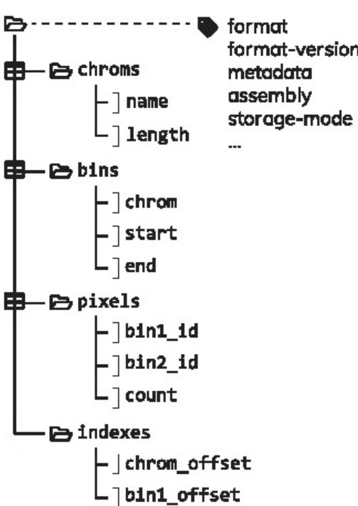

library(HiContactsData)
## Loading required package: ExperimentHub
## Loading required package: BiocGenerics
##
## Attaching package: 'BiocGenerics'
## The following objects are masked from 'package:stats':
##
## IQR, mad, sd, var, xtabs
## The following objects are masked from 'package:base':
##
## Filter, Find, Map, Position, Reduce, anyDuplicated, aperm,
## append, as.data.frame, basename, cbind, colnames, dirname,
## do.call, duplicated, eval, evalq, get, grep, grepl, intersect,
## is.unsorted, lapply, mapply, match, mget, order, paste, pmax,
## pmax.int, pmin, pmin.int, rank, rbind, rownames, sapply,
## setdiff, table, tapply, union, unique, unsplit, which.max,
## which.min
## Loading required package: AnnotationHub
## Loading required package: BiocFileCache
## Loading required package: dbplyr1 Hi-C pre-processing steps
Pre-loading packages üì¶
Aims
This chapter introduces the reader to general Hi-C experimental and computational steps to perform the pre-processing of Hi-C. This encompasses read alignment, pairs generation and filtering and pairs binning into a contact matrix file.
1.1 Experimental considerations
1.1.1 Experimental approach
The Hi-C procedure (Lieberman-Aiden et al. (2009)) stems from the clever combination of high-throughput sequencing and Chromatin Conformation Capture (3C) experimental approach (Dekker et al. (2002)).
In Hi-C, chromatin is crosslinked within intact nuclei and enzymatically digested (usually with one or several restriction enzymes, but Hi-C variants using MNase or DNase exist). End-repair introduces biotinylated dNTPs and is followed by religation, which generates chimeric DNA fragments consisting of genomic loci originally lying in spatial proximity, usually crosslinked to a shared protein complex. After religation, DNA fragments are sheared, biotin-containing fragments are pulled-down and converted into a sequencing library.
1.1.2 C variants
A number of C variants have been proposed since the publication of the original 3C method (reviewed by Davies et al. (2017)), the main ones being Capture-C and ChIA-PET (see procedure below).
Capture-C is useful to quantify interactions between a set of regulatory elements of interest. ChIA-PET, on the other hand, can identify interactions mediated by a specific protein of interest. Finally, an increasing number of Hi-C approaches rely on long-read sequencing (e.g. Deshpande et al. (2022), Tavares-Cadete et al. (2020)) to identify clusters of 3D contacts.
1.1.3 Sequencing
Hi-C libraries are traditionally sequenced with short-read technology, and are by essence paired-end libraries. For this reason, the end result of the experimental side of the Hi-C consists of two fastq files, each one containing sequences for one extremity of the DNA fragments purified during Hi-C. These are the two files we need to move on to the computational side of Hi-C.
Fastq files are plain text files (usually compressed, with the .gz extension). They are generated by the sequencing machine during a sequencing run, and for Hi-C, necessarily come in pairs, generally called *_R1.fq.gz and *_R2.fq.gz.
Here is the first read listed in sample_R1.fq.gz file:
sample-R1.fq.gz
@SRR5399542.1.1 DH1DQQN1:393:H9GEWADXX:1:1101:1187:2211 length=24
CAACTTCAATACCAGCAGCAGCAA
+
CCCFFFFFHHHHHJJJJJIJJJJJAnd here is the first read listed in sample_R2.fq.gz file:
sample-R2.fq.gz
@SRR5399542.1.1 DH1DQQN1:393:H9GEWADXX:1:1101:1187:2211 length=24
GCTGTTGTTGTTGTTGTATTTGCA
+
@@@FFFFFFHHHHIJJIJJHIIEHThese two reads are the first listed in their respective file. Notice how they bear the same name (first line): they form a pair. The second line corresponds to the sequence read by the sequencer, the third line is a single + separator, and the last line indicates the per-base sequencing quality following a nebulous cypher.
1.2 Hi-C file formats
Two important output files are typically generated during Hi-C data pre-processing:
- A “pairs” file;
- A binned “contact matrix” file
We will now describe the structure of these different types of files. Directly jump to the next chapter if you want to know more about importing data from a contact matrix or a pairs file in R.
1.2.1 Pairs files
A “pairs” file (optionally, but generally filtered and sorted) is the direct output of processing Hi-C fastq files. It stores information about putative proximity contacts identified by digestion/religation, in the lossless, human-readable, indexable format: the .pairs format.
A .pairs file is organized in a header followed by a body:
-
header: starts with#- Required entries
- First line:
## pairs format v1.0 -
#columns: column contents and ordering (e.g.#columns: readID chr1 pos1 chr2 pos2 strand1 strand2 <column_name> <column_name> ...) -
#chromsize: chromosome names and their size in bp, one chromosome per line, in the same order that defines ordering between mates (e.g.#chromsize: chr1 230218). Chromosome order is actually defined by this header, not by the order of pairs listed in thebody!
- First line:
- Optional entries with reserved header keys (
sorted,shape,command,genome_assembly)-
#sorted: to indicate the sorting mechanism (e.g.#sorted: chr1-chr2-pos1-pos2,#sorted: chr1-pos1,#sorted: none) -
#shape: to specify whether the matrix is stored as upper triangle or lower triangle (#shape: upper triangle,#shape: lower triangle) -
#command: to specify any command, e.g. the command used to generate the pairs file (#command: bam2pairs mysample.bam mysample) -
#genome_assembly: to specify the genome assembly (e.g.#genome_assembly: hg38)
-
- Required entries
-
body: tab-separated columns- 7 reserved (4 of them required) columns:
readID, chr1, pos1, chr2, pos2, strand1, strand2- Columns 2-5 (
chr1, pos1, chr2, pos2) are required and cannot have missing values - For column 1, 6 & 7: missing values are annotated with a single-character dummy (
.)
- 2 extra reserved, optional column names:
-
frag1,frag2: restriction enzyme fragment index used byJuicer
-
- Any number of optional columns can be added
- 7 reserved (4 of them required) columns:
sample.pairs
## pairs format v1.0
#sorted: chr1-chr2-pos1-pos2
#shape: upper triangle
#genome_assembly: hg38
#chromsize: chr1 249250621
#chromsize: chr2 243199373
#chromsize: chr3 198022430
...
#columns: readID chr1 pos1 chr2 pos2 strand1 strand2
EAS139:136:FC706VJ:2:2104:23462:197393 chr1 10000 chr1 20000 + +
EAS139:136:FC706VJ:2:8762:23765:128766 chr1 50000 chr1 70000 + +
EAS139:136:FC706VJ:2:2342:15343:9863 chr1 60000 chr2 10000 + +
EAS139:136:FC706VJ:2:1286:25:275154 chr1 30000 chr3 40000 + -More information about the conventions related to this text file are provided by the 4DN consortium, which originally formalized the specifications of this file format.
1.2.2 Binned contact matrix files
1.2.2.1 Binning pairs into a matrix
The action of “binning” a .pairs file into a contact matrix consists in (1) discretizing a genome reference into genomic bins, (2) attributing bins for each pair’s extremity and (3) computing the interaction frequency between any pair of genomic bins, i.e. the “contact matrix”.
For instance, here is a dummy .pairs file with a total of 5 pairs:
dummy.pairs
## pairs format v1.0
#sorted: chr1-chr2-pos1-pos2
#columns: readID chr1 pos1 chr2 pos2 strand1 strand2
#chromsize: chr1 389
. chr1 162 chr1 172 . .
. chr1 180 chr1 192 . .
. chr1 183 chr1 254 . .
. chr1 221 chr1 273 . .
. chr1 254 chr1 298 . . Note that this genome reference is made of a single chromosome (chr1), very short (length of 389). By binning this chromosome in 100bp-wide bins (100 bp is the resolution), one would obtain the following four bins:
bins.bed
<chr> <pos> <bin>
chr1 1 100
chr1 101 200
chr1 201 300
chr1 301 389Each pair extremity can be changed to an integer indicating the position of the bin it falls in, e.g. for the left-hand extremity of the pairs file printed hereinabove (bin1):
<chr1> <pos1> -> <bin1>
chr1 162 -> 2
chr1 180 -> 2
chr1 183 -> 2
chr1 221 -> 3
chr1 254 -> 3Similarly for the right-hand extremity of the pairs file (bin2):
<chr2> <pos2> -> <bin2>
chr1 172 -> chr1 2
chr1 192 -> chr1 2
chr1 254 -> chr1 3
chr1 273 -> chr1 3
chr1 298 -> chr1 3By pasting side-to-side the left-hand and right-hand extremities of each pair, the .pairs file can be turned into something like:
<bin1> <bin2>
2 2
2 2
2 3
3 3
3 3And if we now count the number of each <bin1> <bin2> combination, adding a third <count> column, we end up with a count.matrix text file:
count.matrix
<bin1> <bin2> <count>
2 2 2
2 3 1
3 3 2This count.matrix file lists a total of 5 pairs, and in which bin each extremity of each pair is contained. Thus, a count matrix is a lossy file format, as it “rounds up” the position of each pair’s extremity to the genomic bin containing it.
This “i-j-x” 3-column format, in which i-j relate to a pair of “coordinates” indices (or a pair of genomic bin indices) in a matrix, and x relates to a score associated with the pair of indices, is generally called a “COO sparse matrix”.
In this context, the regions.bed acts as a secondary “dictionary” describing the nature of i and j indices, i.e. the location of genomic bins.
1.2.2.2 Plain-text matrices: HiC-Pro style
The HiC-Pro pipeline (Servant et al. (2015)) outputs 2 text files: a regions.bed file and a count.matrix file. They are generated by the exact process explained above.
Together, these two files can describe the interaction frequency between any pair of genomic loci. They are non-binarized text files, and as such are technically human-readable. However, it is relatively hard to get a grasp of these files compared to a plain .pairs file, as information regarding genomic bins and interaction frequencies are stored in separate files. Moreover, because they are non-binarized, these files often end up using a large disk space and cannot be easily indexed. This prevents easy subsetting of the data stored in these files.
.(m)cool and .hic file formats are two standards addressing these limitations.
1.2.2.3 .(m)cool matrices
The .cool format has been formally defined in Abdennur & Mirny (2019) and is a particular type of HDF5 (Hierarchical Data Format) file. It is an indexed archive file storing rectangular tables called:
-
bins: containing the same information than theregions.bedfile; -
pixels: containing the same information than thecount.matrix(each “pixel” is a pair of 2binsand has one or several associatedscores); -
chroms: summarizing the order and length of the chromosomes present in a Hi-C contact matrix; -
indexes: allowingrandom access, i.e. parsing of only a subset of the data without having to read through the entire set of data.

A single .pairs file binned at different resolutions can also be saved into a single, multi-resolution .mcool file. .mcool essentially consists of nested .cool files.
Importantly, as an HDF5-based format, .cool files are binarized, indexed and highly-compressed. This has two major benefits:
- Smaller disk storage footprint
- Rapid subsetting of the data through random access
Moreover, parsing .cool files is possible using HDF standard APIs.
1.2.2.4 .hic matrices
The .hic format is another type of binarized, indexed and highly-compressed file (Durand et al. (2016)). It can store virtually the same information than a .cool file. However, parsing .hic files is not as straightforward as .cool files, as it does not rely on a generic file standard. Still, the straw library has been implemented in several computing languages to facilitate parsing of .hic files (Durand et al. (2016)).
1.3 Pre-processing Hi-C data
1.3.1 Processing workflow
Fundamentally, the main steps performed to pre-process Hi-C are:
- Separate read mapping
- Pairs parsing
- Pairs sorting
- Pairs filtering
- Pairs binning into a contact matrix
- Normalization of contact matrix and multi-resolution matrix generation
In practice, a minimal workflow to pre-process Hi-C data is the following (adapted from Open2C et al. (2023)):
## This chunk of code is not executed when rendering this book.
## Note these fields have to be replaced by appropriate variables:
## <index>
## <input.R1.fq.gz>
## <input.R2.fq.gz>
## <chromsizes.txt>
## <prefix>
bwa mem2 -SP5M <index> <input.R1.fq.gz> <input.R2.fq.gz> \
| pairtools parse -c <chromsizes.txt> \
| pairtools sort \
| pairtools dedup \
| cooler cload pairs -c1 2 -p1 3 -c2 4 -p2 5 <chromsizes.txt>:10000 - <prefix>.cool
cooler zoomify --balance --nproc 32 --resolutions 5000N --out <prefix>.mcool <prefix>.coolSeveral pipelines have been developed to facilitate Hi-C data pre-processing. A few of them stand out from the crowd:
-
nf-distiller: a combination of an aligner +pairtools+cooler -
HiC-pro(Servant et al. (2015)) -
Juicer(Durand et al. (2016))
Note
For larger genomes (> 1Gb) with more than few tens of M of reads per fastq (e.g. > 100M), we recommend pre-processing data on an HPC cluster. Aligners, pairs processing and matrix binning can greatly benefit from parallelization over multiple CPUs (Open2C et al. (2023))).
To scale up data pre-processing, we recommend to rely on an efficient read mapper such as bwa, followed by pairs parsing, sorting and deduplication with pairtools and binning with cooler.
1.3.2 hicstuff: lightweight Hi-C pipeline
hicstuff is an integrated workflow to process Hi-C data. Some advantages compared to solutions mentioned above are its simplicity, flexibility and lightweight. For shallow sequencing or Hi-C on smaller genomes, it efficiently parses fastq reads and processes data into binned contact matrices with a single terminal command.
hicstuff provides both a command-line interface (CLI) and a python API to process fastq reads into a binned contact matrix. A processing pipeline can be launched using the standard command pipeline as follows:
## This chunk of code is not executed when rendering this book.
## Note these fields have to be replaced by appropriate variables:
## <hicstuff-options>
## <genome.fa>
## <input.R1.fq.gz>
## <input.R2.fq.gz>
hicstuff pipeline \
<hicstuff-options> \
--genome <genome.fa> \
<input.R1.fq.gz> \
<input.R2.fq.gz> hicstuff documentation website is available here: https://hicstuff.readthedocs.io/ to read more about available options and internal processing steps.
1.3.3 HiCool: hicstuff within R
hicstuff is available as a standalone (conda install -c bioconda hicstuff it!). It is also shipped in an R package: HiCool. Thus, HiCool can process fastq files directly within an R console.
1.3.3.1 Executing HiCool
To demonstrate this, we first fetch example .fastq files:
library(HiContactsData)
r1 <- HiContactsData(sample = 'yeast_wt', format = 'fastq_R1')
## see ?HiContactsData and browseVignettes('HiContactsData') for documentation
## downloading 1 resources
## retrieving 1 resource
## loading from cache
r2 <- HiContactsData(sample = 'yeast_wt', format = 'fastq_R2')
## see ?HiContactsData and browseVignettes('HiContactsData') for documentation
## downloading 1 resources
## retrieving 1 resource
## loading from cache
r1
## EH7783
## "/root/.cache/R/ExperimentHub/ba3c7e2e42_7833"
r2
## EH7784
## "/root/.cache/R/ExperimentHub/ba3274b206_7834"We then load the HiCool library and execute the main HiCool function.
Important note:
HiCool relies on basilisk R package to set up an underlying, self-managed python environment. Some packages from this environment are not yet available for ARM chips (e.g. M1/2/3 in newer on macbooks) or Windows. For this reason, HiCool-supported features are not available on these machines.
1.3.3.2 HiCool arguments
Several arguments can be passed to HiCool and some are worth mentioning them:
-
restriction: (default:"DpnII,HinfI")
-
resolutions: (default:NULL, automatically inferring resolutions based on genome size)
-
iterative: (default:TRUE)
-
filter: (default:TRUE)
-
balancing_args: (default:" --cis-only --min-nnz 3 --mad-max 7 ")
-
threads: (default:1L)
Other HiCool arguments can be listed by checking HiCool documentation in R: ?HiCool::HiCool.
1.3.3.3 HiCool outputs
We can check the generated output files placed in the HiCool/ directory.
## This chunk of code is not executed when rendering this book.
fs::dir_tree('HiCool/')- The
*.pairsand*.mcoolfiles are the pairs and contact matrix files, respectively. These are the output files the end-user is generally looking for. - The
*.htmlfile is a report summarizing pairs numbers, filtering, etc… - The
*.logfile contains all output and error messages, as well as the full list of commands that have been executed to pre-process the input dataset. - The
*.pdfgraphic files provide a visual representation of the distribution of informative/non-informative pairs.
Tip
All the files generated by a single HiCool pipeline execution contain the same 6-letter unique hash to make sure they are not overwritten if re-executing the same command.
1.4 Exploratory data analysis of processed Hi-C files
Once Hi-C raw data has been transformed into a set of processed files, exploratory data analysis is typically conducted following two main routes:
- Data visualization;
- Data investigation.
During the last decade, a number of softwares have been developed to unlock Hi-C data visualization and investigation. Here we provide a non-exhaustive list of notable tools developed throughout the recent years for downstream Hi-C analysis, selected from this longer list.
-
2012-2015:
- HiTC (2012)
- HiCCUPS (2014)
- HiCseg (2014)
- Fit-Hi-C (2014)
- HiC-Pro (2015)
- diffHic (2015)
- cooltools (2015)
- HiCUP (2015)
- HiCPlotter (2015)
- HiFive (2015)
-
2016-2019:
- CHiCAGO (2016)
- TADbit (2017)
- HiCRep (2017)
- HiC-DC (2017)
- GoTHIC (2017)
- HiCExplorer (2018)
- Boost-HiC (2018)
- HiCcompare (2018)
- HiPiler (2018)
- coolpuppy (2019)
-
2020-present:
- Serpentine (2020)
- CHESS (2020)
- DeepHiC (2020)
- Chromosight (2020)
- Mustache (2020)
- TADcompare (2020)
- POSSUM (2021)
- Calder (2021)
- HICDCPlus (2021)
- plotgardener (2021)
- GENOVA (2021)
All references as well as many other softwares and references are available here.
Session info
Click to expand üëá
sessioninfo::session_info(include_base = TRUE)
## ─ Session info ────────────────────────────────────────────────────────────
## setting value
## version R Under development (unstable) (2024-01-17 r85813)
## os Ubuntu 22.04.3 LTS
## system x86_64, linux-gnu
## ui X11
## language (EN)
## collate C
## ctype en_US.UTF-8
## tz Etc/UTC
## date 2024-01-22
## pandoc 3.1.1 @ /usr/local/bin/ (via rmarkdown)
##
## ─ Packages ────────────────────────────────────────────────────────────────
## package * version date (UTC) lib source
## AnnotationDbi 1.65.2 2023-11-03 [2] Bioconductor
## AnnotationHub * 3.11.1 2023-12-11 [2] Bioconductor 3.19 (R 4.4.0)
## base * 4.4.0 2024-01-18 [3] local
## Biobase 2.63.0 2023-10-24 [2] Bioconductor
## BiocFileCache * 2.11.1 2023-10-26 [2] Bioconductor
## BiocGenerics * 0.49.1 2023-11-01 [2] Bioconductor
## BiocManager 1.30.22 2023-08-08 [2] CRAN (R 4.4.0)
## BiocVersion 3.19.1 2023-10-26 [2] Bioconductor
## Biostrings 2.71.1 2023-10-25 [2] Bioconductor
## bit 4.0.5 2022-11-15 [2] CRAN (R 4.4.0)
## bit64 4.0.5 2020-08-30 [2] CRAN (R 4.4.0)
## bitops 1.0-7 2021-04-24 [2] CRAN (R 4.4.0)
## blob 1.2.4 2023-03-17 [2] CRAN (R 4.4.0)
## cachem 1.0.8 2023-05-01 [2] CRAN (R 4.4.0)
## cli 3.6.2 2023-12-11 [2] CRAN (R 4.4.0)
## compiler 4.4.0 2024-01-18 [3] local
## crayon 1.5.2 2022-09-29 [2] CRAN (R 4.4.0)
## curl 5.2.0 2023-12-08 [2] CRAN (R 4.4.0)
## datasets * 4.4.0 2024-01-18 [3] local
## DBI 1.2.1 2024-01-12 [2] CRAN (R 4.4.0)
## dbplyr * 2.4.0 2023-10-26 [2] CRAN (R 4.4.0)
## digest 0.6.34 2024-01-11 [2] CRAN (R 4.4.0)
## dplyr 1.1.4 2023-11-17 [2] CRAN (R 4.4.0)
## evaluate 0.23 2023-11-01 [2] CRAN (R 4.4.0)
## ExperimentHub * 2.11.1 2023-12-11 [2] Bioconductor 3.19 (R 4.4.0)
## fansi 1.0.6 2023-12-08 [2] CRAN (R 4.4.0)
## fastmap 1.1.1 2023-02-24 [2] CRAN (R 4.4.0)
## filelock 1.0.3 2023-12-11 [2] CRAN (R 4.4.0)
## generics 0.1.3 2022-07-05 [2] CRAN (R 4.4.0)
## GenomeInfoDb 1.39.5 2024-01-01 [2] Bioconductor 3.19 (R 4.4.0)
## GenomeInfoDbData 1.2.11 2024-01-22 [2] Bioconductor
## glue 1.7.0 2024-01-09 [2] CRAN (R 4.4.0)
## graphics * 4.4.0 2024-01-18 [3] local
## grDevices * 4.4.0 2024-01-18 [3] local
## HiContactsData * 1.5.3 2024-01-22 [2] Github (js2264/HiContactsData@d5bebe7)
## htmltools 0.5.7 2023-11-03 [2] CRAN (R 4.4.0)
## htmlwidgets 1.6.4 2023-12-06 [2] CRAN (R 4.4.0)
## httr 1.4.7 2023-08-15 [2] CRAN (R 4.4.0)
## IRanges 2.37.1 2024-01-19 [2] Bioconductor 3.19 (R 4.4.0)
## jsonlite 1.8.8 2023-12-04 [2] CRAN (R 4.4.0)
## KEGGREST 1.43.0 2023-10-24 [2] Bioconductor
## knitr 1.45 2023-10-30 [2] CRAN (R 4.4.0)
## lifecycle 1.0.4 2023-11-07 [2] CRAN (R 4.4.0)
## magrittr 2.0.3 2022-03-30 [2] CRAN (R 4.4.0)
## memoise 2.0.1 2021-11-26 [2] CRAN (R 4.4.0)
## methods * 4.4.0 2024-01-18 [3] local
## mime 0.12 2021-09-28 [2] CRAN (R 4.4.0)
## pillar 1.9.0 2023-03-22 [2] CRAN (R 4.4.0)
## pkgconfig 2.0.3 2019-09-22 [2] CRAN (R 4.4.0)
## png 0.1-8 2022-11-29 [2] CRAN (R 4.4.0)
## purrr 1.0.2 2023-08-10 [2] CRAN (R 4.4.0)
## R6 2.5.1 2021-08-19 [2] CRAN (R 4.4.0)
## rappdirs 0.3.3 2021-01-31 [2] CRAN (R 4.4.0)
## RCurl 1.98-1.14 2024-01-09 [2] CRAN (R 4.4.0)
## rlang 1.1.3 2024-01-10 [2] CRAN (R 4.4.0)
## rmarkdown 2.25 2023-09-18 [2] CRAN (R 4.4.0)
## RSQLite 2.3.5 2024-01-21 [2] CRAN (R 4.4.0)
## S4Vectors 0.41.3 2024-01-01 [2] Bioconductor 3.19 (R 4.4.0)
## sessioninfo 1.2.2 2021-12-06 [2] CRAN (R 4.4.0)
## stats * 4.4.0 2024-01-18 [3] local
## stats4 4.4.0 2024-01-18 [3] local
## tibble 3.2.1 2023-03-20 [2] CRAN (R 4.4.0)
## tidyselect 1.2.0 2022-10-10 [2] CRAN (R 4.4.0)
## tools 4.4.0 2024-01-18 [3] local
## utf8 1.2.4 2023-10-22 [2] CRAN (R 4.4.0)
## utils * 4.4.0 2024-01-18 [3] local
## vctrs 0.6.5 2023-12-01 [2] CRAN (R 4.4.0)
## withr 3.0.0 2024-01-16 [2] CRAN (R 4.4.0)
## xfun 0.41 2023-11-01 [2] CRAN (R 4.4.0)
## XVector 0.43.1 2024-01-10 [2] Bioconductor 3.19 (R 4.4.0)
## yaml 2.3.8 2023-12-11 [2] CRAN (R 4.4.0)
## zlibbioc 1.49.0 2023-10-24 [2] Bioconductor
##
## [1] /tmp/Rtmp4kTMSb/Rinstb104d8a34
## [2] /usr/local/lib/R/site-library
## [3] /usr/local/lib/R/library
##
## ───────────────────────────────────────────────────────────────────────────References
Abdennur, N., & Mirny, L. A. (2019). Cooler: Scalable storage for hi-c data and other genomically labeled arrays. Bioinformatics, 36(1), 311–316. https://doi.org/10.1093/bioinformatics/btz540
Davies, J. O. J., Oudelaar, A. M., Higgs, D. R., & Hughes, J. R. (2017). How best to identify chromosomal interactions: A comparison of approaches. Nature Methods, 14(2), 125–134. https://doi.org/10.1038/nmeth.4146
Dekker, J., Rippe, K., Dekker, M., & Kleckner, N. (2002). Capturing chromosome conformation. Science, 295(5558), 1306–1311. https://doi.org/10.1126/science.1067799
Deshpande, A. S., Ulahannan, N., Pendleton, M., Dai, X., Ly, L., Behr, J. M., Schwenk, S., Liao, W., Augello, M. A., Tyer, C., Rughani, P., Kudman, S., Tian, H., Otis, H. G., Adney, E., Wilkes, D., Mosquera, J. M., Barbieri, C. E., Melnick, A., … Imieliński, M. (2022). Identifying synergistic high-order 3D chromatin conformations from genome-scale nanopore concatemer sequencing. Nature Biotechnology, 40(10), 1488–1499. https://doi.org/10.1038/s41587-022-01289-z
Durand, N. C., Shamim, M. S., Machol, I., Rao, S. S. P., Huntley, M. H., Lander, E. S., & Aiden, E. L. (2016). Juicer provides a one-click system for analyzing loop-resolution hi-c experiments. Cell Systems, 3(1), 95–98. https://doi.org/10.1016/j.cels.2016.07.002
Lieberman-Aiden, E., Berkum, N. L. van, Williams, L., Imakaev, M., Ragoczy, T., Telling, A., Amit, I., Lajoie, B. R., Sabo, P. J., Dorschner, M. O., Sandstrom, R., Bernstein, B., Bender, M. A., Groudine, M., Gnirke, A., Stamatoyannopoulos, J., Mirny, L. A., Lander, E. S., & Dekker, J. (2009). Comprehensive mapping of long-range interactions reveals folding principles of the human genome. Science, 326(5950), 289–293. https://doi.org/10.1126/science.1181369
Open2C, Abdennur, N., Fudenberg, G., Flyamer, I. M., Galitsyna, A. A., Goloborodko, A., Imakaev, M., & Venev, S. V. (2023). Pairtools: From sequencing data to chromosome contacts. https://doi.org/10.1101/2023.02.13.528389
Servant, N., Varoquaux, N., Lajoie, B. R., Viara, E., Chen, C.-J., Vert, J.-P., Heard, E., Dekker, J., & Barillot, E. (2015). HiC-pro: An optimized and flexible pipeline for hi-c data processing. Genome Biology, 16(1). https://doi.org/10.1186/s13059-015-0831-x
Tavares-Cadete, F., Norouzi, D., Dekker, B., Liu, Y., & Dekker, J. (2020). Multi-contact 3C reveals that the human genome during interphase is largely not entangled. Nature Structural &Amp\(\mathsemicolon\) Molecular Biology, 27(12), 1105–1114. https://doi.org/10.1038/s41594-020-0506-5